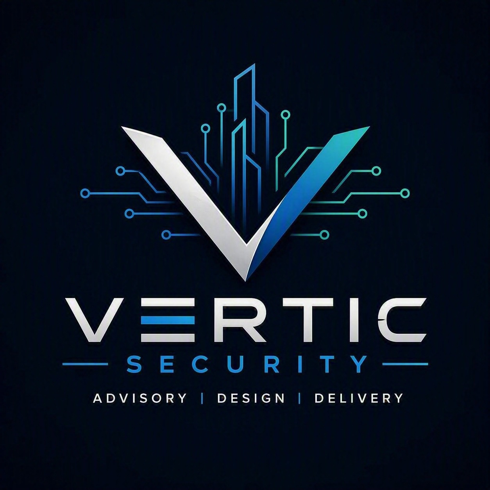

Capability statement
Security built for critical environments.
Independent advisory, engineered design and technology delivery for complex and high-consequence facilities.
Company overview
Vertic Security is an Australian security business providing security advisory, risk assessment, physical security design, technology delivery, systems integration and assurance. Services support clients from early project definition through installation, testing, commissioning and operational handover.
Core capabilities
Advisory
Strategies, risk assessments, master planning, governance and project requirements.
Design
Access control, video surveillance, intrusion, intercom, SOC, perimeter and supporting infrastructure.
Delivery
Installation planning, integration, programming, testing, commissioning and handover.
Assurance
Independent reviews, compliance checks, installation quality, acceptance and defect closure.
Secure facilities
Protective security and secure-facility advisory aligned to each approved project pathway.
Modernisation
Existing-system assessments, migration, upgrades, lifecycle and technology roadmaps.
Industry focus
Data centres • Critical infrastructure • Government • Commercial property • Healthcare • Education • Financial services • Industrial and logistics
Delivery approach
Discover → Define → Design → Deliver → Assure
Contact
info@verticsecurity.com.au
www.verticsecurity.com.au
Services, licensing arrangements, certifications, products and delivery responsibilities are confirmed for each engagement.